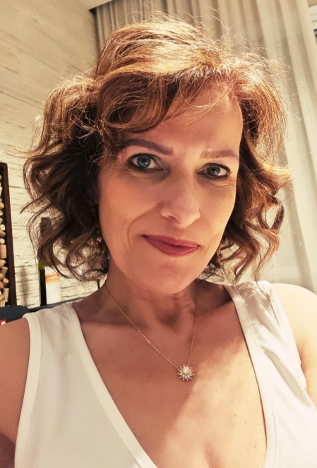
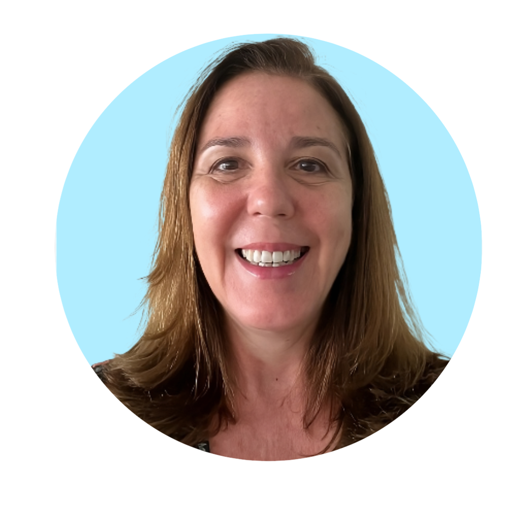
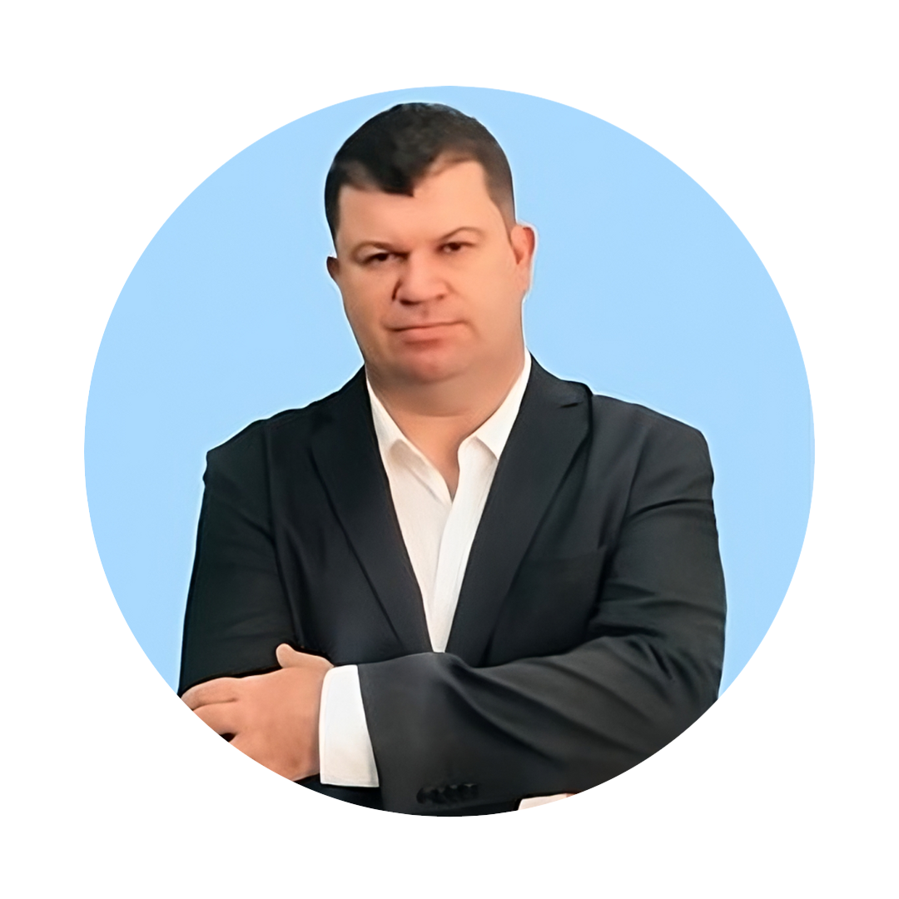
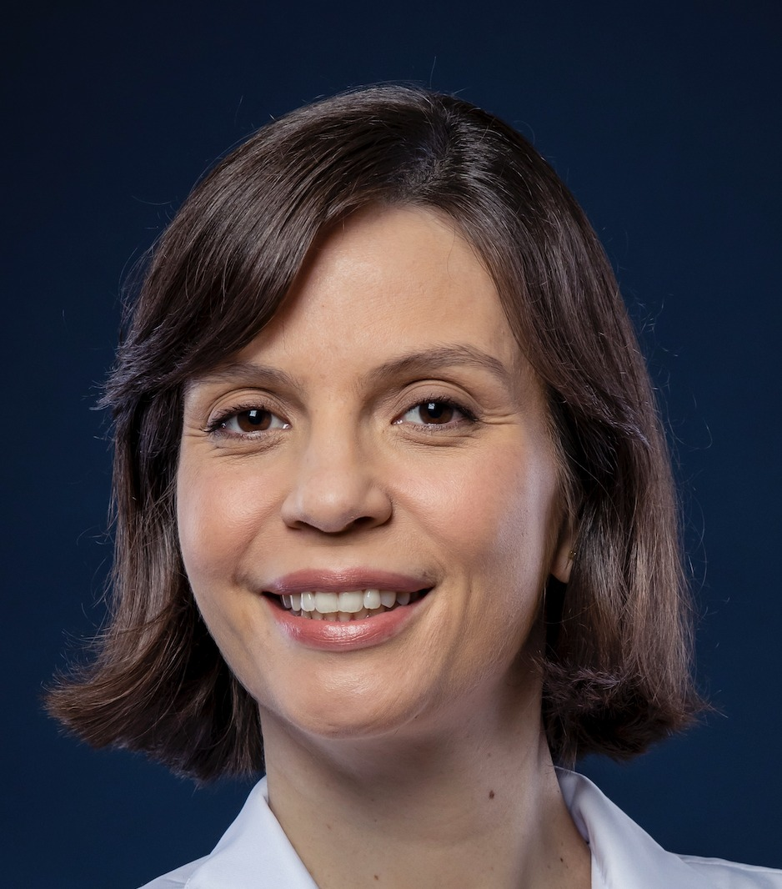

// the people behind labr
Our Team
Seven clinical laboratory professionals and scientists — voluntarily united to bring open-source statistical tools to Brazilian labs.
Alan Carvalho Dias
- Member, Quality Committee — SBPC/ML
- MSc Health Science, University of Brasília (UnB)
- MBA Data Science & Analytics — Esalq/USP
- MBA Project Management — FGV
- Lean Six Sigma Black Belt
- Bachelor Pharmacy & Clinical Analysis — UFJF
Daniane Canali
- Member, Quality Committee — SBPC/ML
- Pharmacist-Biochemistry, Specialist in Clinical Analysis — PUC/PR
- Auditor, Clinical Laboratories Accreditation Program (PALC/SBPC)
- ADLM Member
- CLSI Member

Claudia Maria Meira Dias
- Member, Quality Committee — SBPC/ML
- Author — "156 Questions and Answers: Quality in Clinical Labs" (Sarvier, 2012)
- MBA Business Management — EAESP/FGV
- Specialization Hospital Administration — EAESP/FGV
- MD, Federal University of Juiz de Fora (UFJF)

Derliane de Oliveira
- Member, Quality Committee — SBPC/ML
- MSc Quality Management — USMA, Panama
- MBA Total Quality Management — UFF
- Bachelor Pharmacy & Clinical Analysis — UEL

João Rodrigo Campos
- Member, Quality Committee — SBPC/ML
- Biochemical Pharmacist — UFMG
- Specialist in Clinical Analysis — Brazilian Society of Clinical Analysis
- MSc — Faculty of Medicine, UFMG
- Professor, Graduate Program in Quality Management — Universidade Fumec
- External Auditor, PALC — SBPC/ML

Luisane Maria Falci Vieira
- Coordinator, Quality Committee — SBPC/ML
- Clinical Pathologist
- MBA Health Management — IBMEC
- Member, Accreditation Commission (CALC) — SBPC/ML/PALC
- SBPC/ML Representative — IFCC TF-GRID Task Force
- Scientific Advisor — LASC Group, Becton Dickinson

Tatiana Ferreira de Almeida
- PhD Human Genetics — Institute of Biosciences, USP
- MSc Sciences — Institute of Biosciences, USP
- MBA Business Analytics & Big Data — EAESP/FGV
- Specialization Medical Genetics — Faculty of Medicine, USP
- MD — Federal University of Paraná (UFPR)
// get in touch
Want to Collaborate?
LabR Group is a voluntary collective — we welcome clinical lab professionals, biostatisticians and R developers who share our mission.
Contact Us →